今天是情人节。
特殊的形势下，不宜出门，也不宜抱有太多浪漫主义的幻想。
反而应该清醒的呆在房间里。
所以，今天我必须要向大家祭出这部藏在硬盘深处多年的电影。
一部真正代表中国电影至高水平的作品。
一部让人看完五味杂陈的爱情故事。
这部电影就是谢晋的《芙蓉镇》！
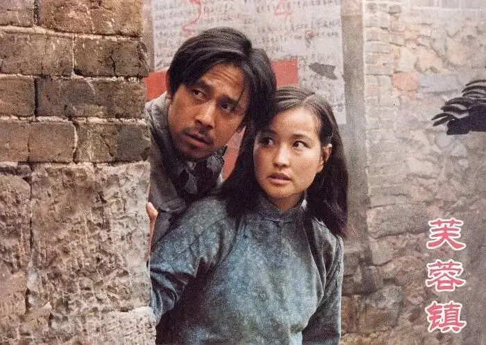
豆瓣9.1。
我自己对他的喜爱胜过《霸王别姬》。
因为《芙蓉镇》没有那么多商业包装，所以更纯，更现实，也更魔幻。
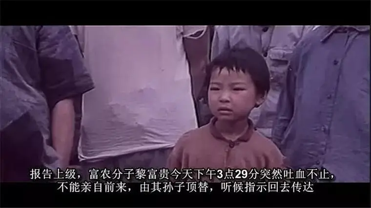
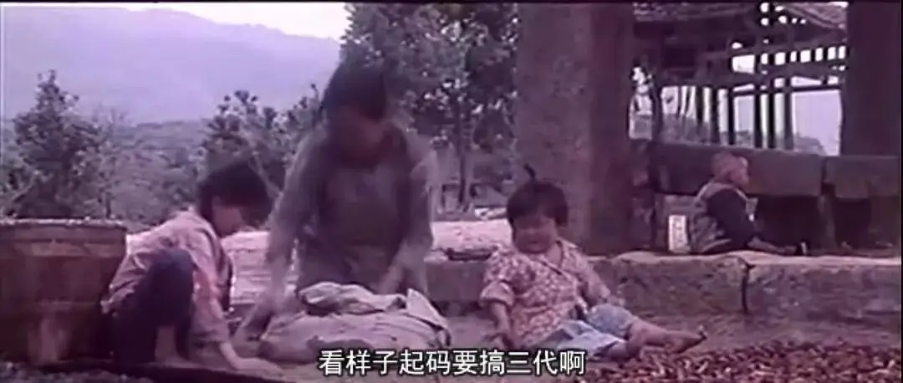
-01- 五类分子
1958年，芙蓉镇。
秦书田被打为右派。
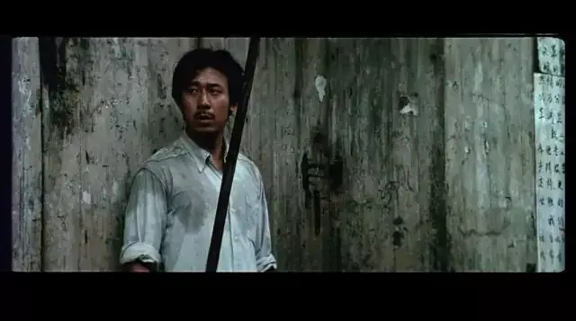
原因是他收集各种民歌编写成了充满封建色彩的歌舞剧。
这种行为简直是疯狂，所以大家叫他为秦癫子。
作为坏分子，谁都可以对他指手画脚。
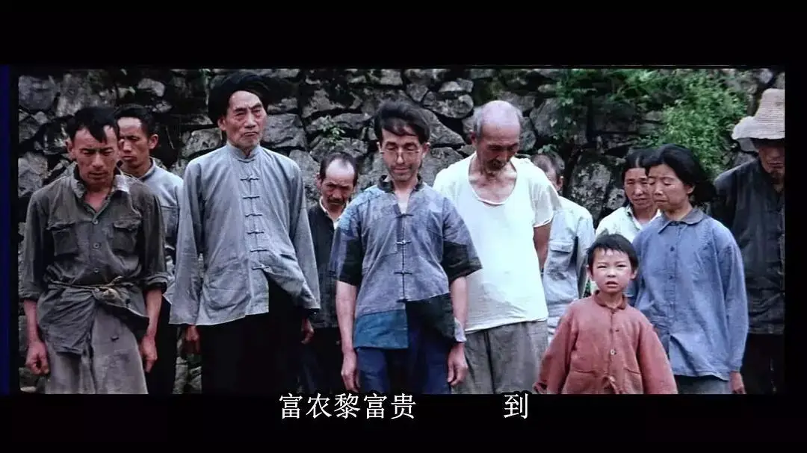
为了和大家和谐相处，可以活着扫大街。
秦书田挨批判时走的最快，站的最直。
认错时，也是诚诚恳恳。
对镇子上每一个人都是客客气气、低头哈腰。
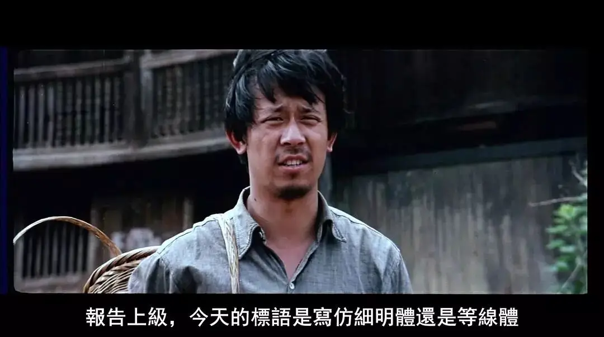
1963年。
镇上一家卖米豆腐的店生意非常火爆。
很大功劳是因为老板娘胡玉音人不但长的漂亮，服务上更是是热情细致，深受大家喜爱。
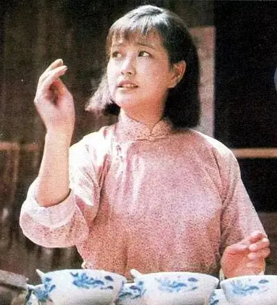
胡玉音是典型的勤劳致富，她家庭成分不好，很多人刚开始都是对她敬而远之。
甚至是和她青梅竹马、彼此爱恋的满庚哥，也怕受他牵连而和她分手。
所幸，胡玉音找了一个老实勤奋的丈夫桂桂。
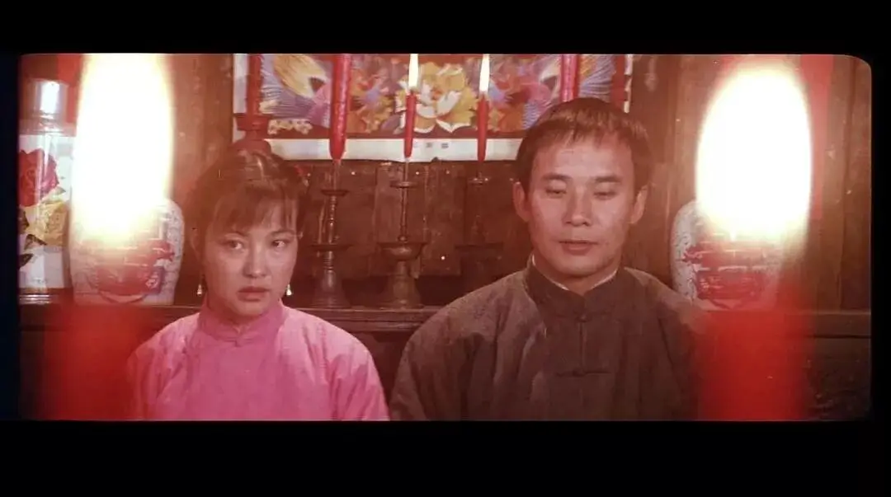
他们每天起早贪黑磨豆腐，努力省吃俭用，日子逐渐过的红火起来。
他们从原来破旧不堪的房子搬进了人人都羡慕的新房子。
为了庆祝乔迁之喜，胡玉音和丈夫摆了酒席，请亲朋好友一起庆祝。
就在众人高兴的时候，一个人登上了芙蓉镇。
她就是李国香。
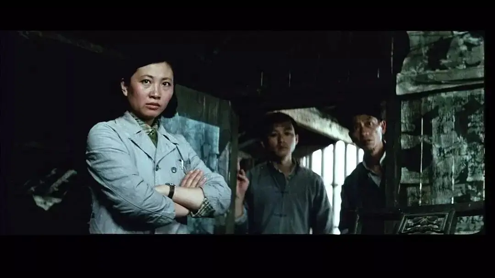
她曾经是一家原国营饮食店经理，店子就开在胡玉音米豆腐店的对面。
李国香自己的店每天门口罗雀，而胡玉音却始终红红火火。
所以，李国香心里对胡玉音充满了嫉妒。
现在，李国香成为了县商业局科长。
而当时恰逢搞四清运动，她成为了县里派到芙蓉镇的工作组组长，负责开展清工分、清账目、清仓库和清财物的运动。
大权在握，自然胡玉音成为了她首当其冲的目标。
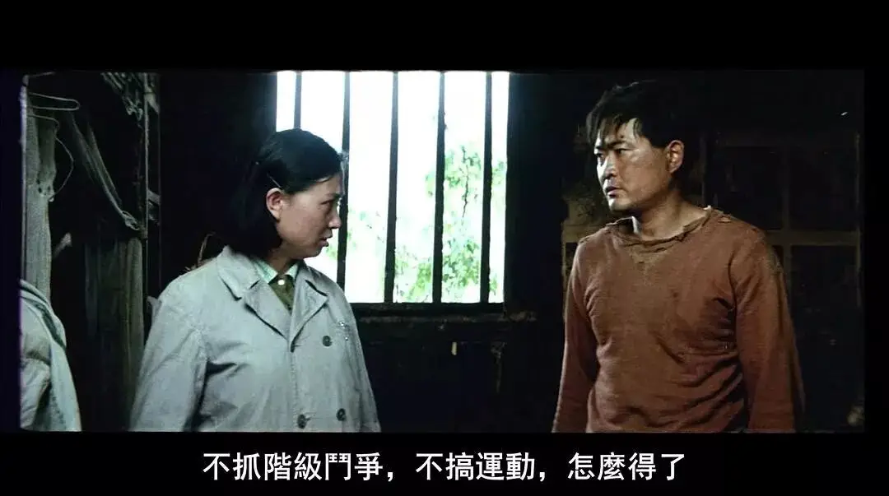
所以，李国香很快上门，对胡玉音进行了所谓的政治经济摸底，并含沙射影地告诉胡玉音：
第一，胡玉音的收入相当于一个省级领导的水平，暗示她有走资倾向。
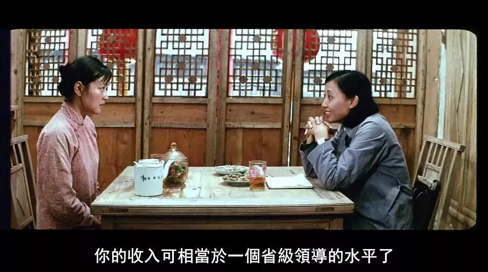
第二，新房的地基是土改积极分子王秋赦的土改果实，暗示她侵占土改的果实。
第三，新房门上的对联是反动右派秦书田写的，暗示她与五类分子同流合污。
第四，粮站主任谷燕山每天提给胡玉音50斤大米（实则是没人要的碎米），暗示她存在贿赂领导的嫌疑。
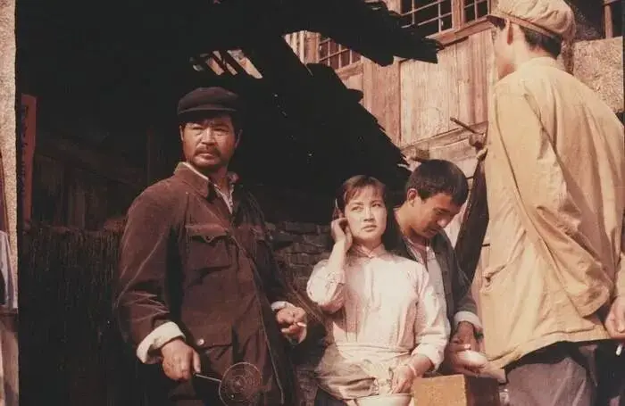
李国香撂下这些话后，胡玉音和丈夫桂桂倒吸一口凉气。
他们知道，要有大麻烦来了。
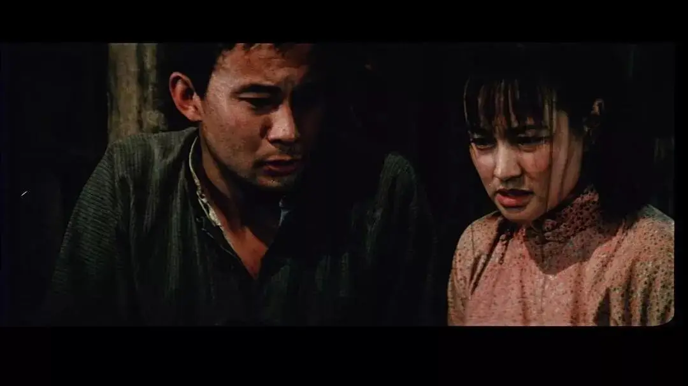
为了安全，丈夫桂桂让胡玉音暂时去婆家避难。
临走前，胡玉音将自己辛苦攒下所有的积蓄1500元交给了满庚，希望他能帮忙保管自己的心血。
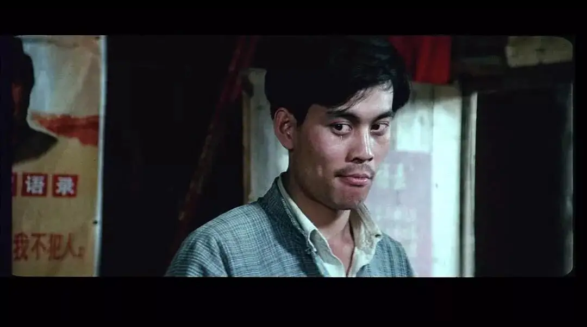
可没想到，胡玉音离开的这几天，悲剧发生了。
谷主任因她被牵连打倒。
满庚为了自保主动将1500元交给了工作组。
他们辛苦买下的新房被没收。
丈夫不堪其辱选择自杀。
胡玉音回来的那个夜晚。
当她知道她曾经拥有的一切都已经失去时，她痛的哭都哭不出来。
胡玉音摇摇晃晃来到丈夫的坟墓旁。
野坟凄凄，狂风大作。
人间惨剧，莫过于此。
胡玉音终于止不住声嘶力竭地哭喊起来。
这时，另一个声音忽然出现，“胡玉音你还好么”。
“你是谁啊”
秦书田说“这怎么说呢，有时候是鬼，有时候是人”
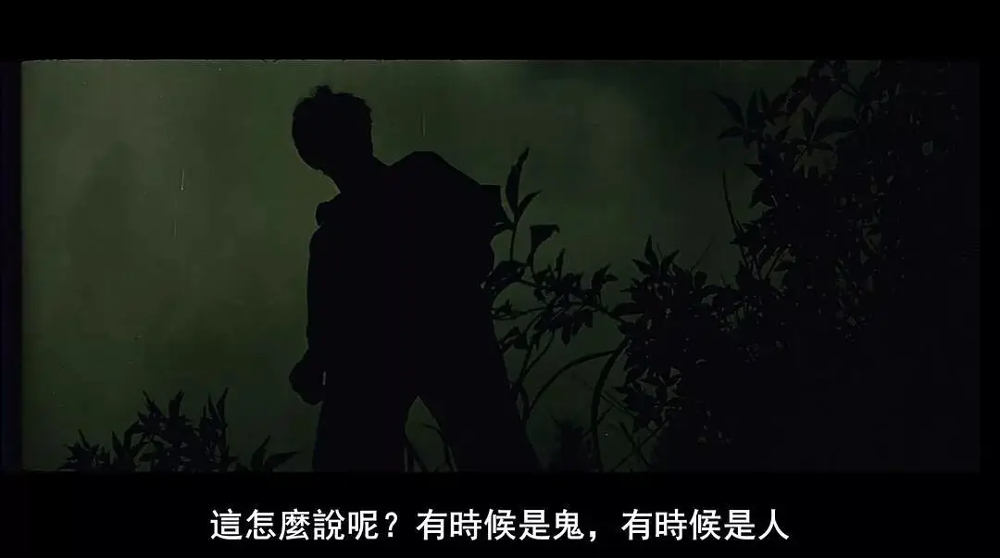
-02- 一对黑夫妻
胡玉音后来被打为新富农。
她被划到秦书田一组，负责每天扫大街。
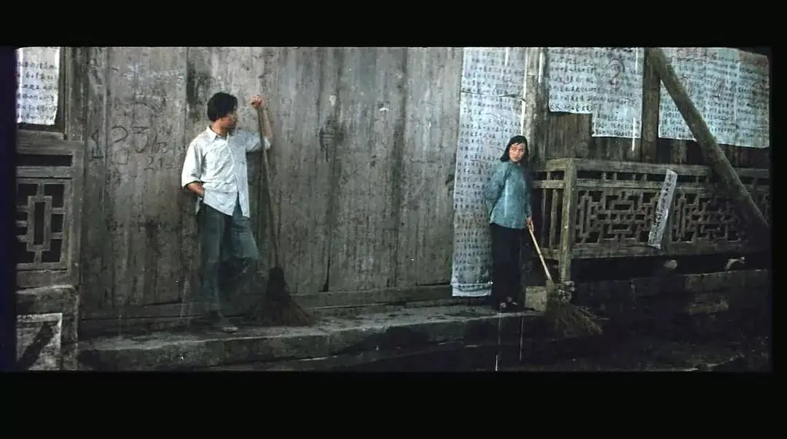
可无时无刻，胡玉音都沉浸在过去的痛苦中。
她早已经没有了活下去的动力和希望。
长时间的劳累，胡玉音终于病倒了。
干脆就这样死了就好了，便可以离开这个“吃人肉”的地狱。
所幸，秦书田出现了，他悉心照顾胡玉音，并告诉她：每个人都不愿意正眼看我们，这个时候只有咱们自己看重自己了。
在那个恐怖的年代，我们无法想象这么一句正常不过的话会有多大的力量。
胡玉音因此选择继续活下去。
就这样，两个被所有人唾弃的五类分子，却一边扫大街一边谈起了恋爱。
他们一边扫，一边还跟着节奏跳起了舞。
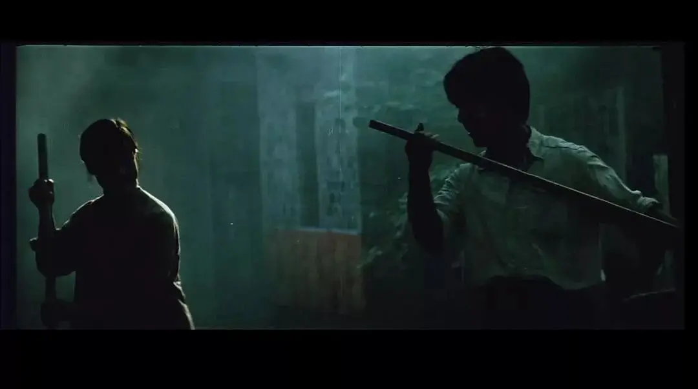
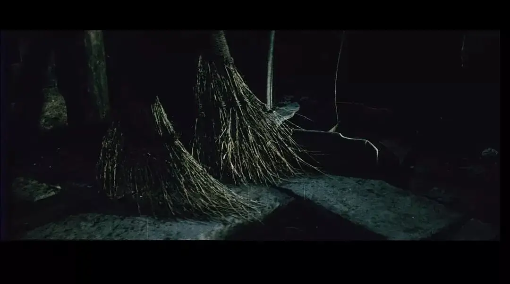
这份纯真的爱情虽然微弱，但真的让人泪目。
那个时代，能做个正常人就已是万幸了。
不久，胡玉音有了身孕，这让他们高兴坏了。
未来，又有了更大的希望。
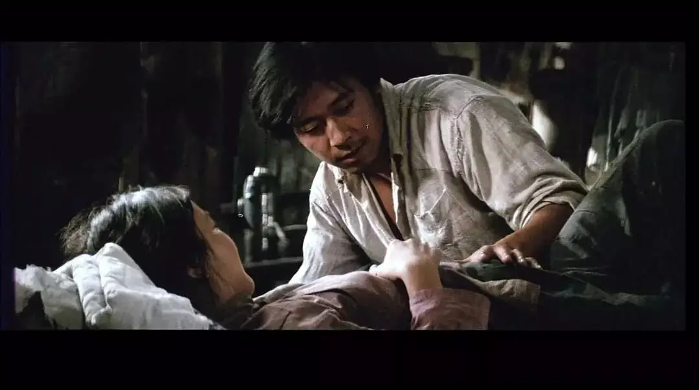
可是，也正是因为怀孕，他们不可能在这么“偷鸡摸狗”地过活了。
他们需要成为正式的夫妻。
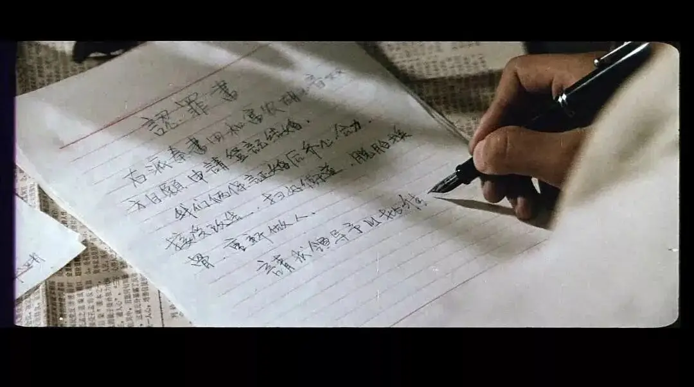
当晚，在妻子温柔注视的目光下，秦书田写了一封认罪书：
右派秦书田和富农胡玉音双方自愿申请登记结婚。
我们俩保证婚后齐心协力接受改造，扫好街道，脱胎换骨，重新做人。
请求领导予以批准。
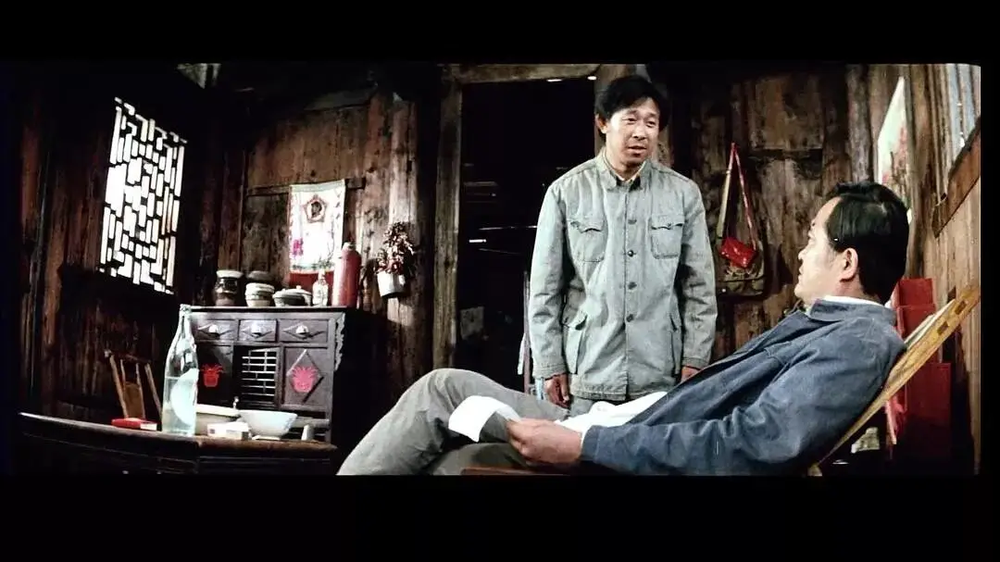
当秦书田拿着这份认罪书找领导时，领导非常生气“你们是专政对象、五类分子，没有结婚这回事”。
这让秦书田很无奈，接着秦书田说：
“我们黑，我们坏，但至少我们是人吧！
就算是公鸡和母鸡、公猪和母猪、公狗和母狗，也不能不让他们婚配吧。”
秦书田的比喻把领导逗笑了。
于是，领导勉为其难答应往上级报批。
接着，秦书田告诉领导胡玉音已经怀孕，希望能够博得领导同情。
可没想到，这却让领导非常生气，要求秦书田自己在家门贴上白对联，向群众交代他和胡玉音的丑事。
对联的内容是：两个狗男女，一对黑夫妻。
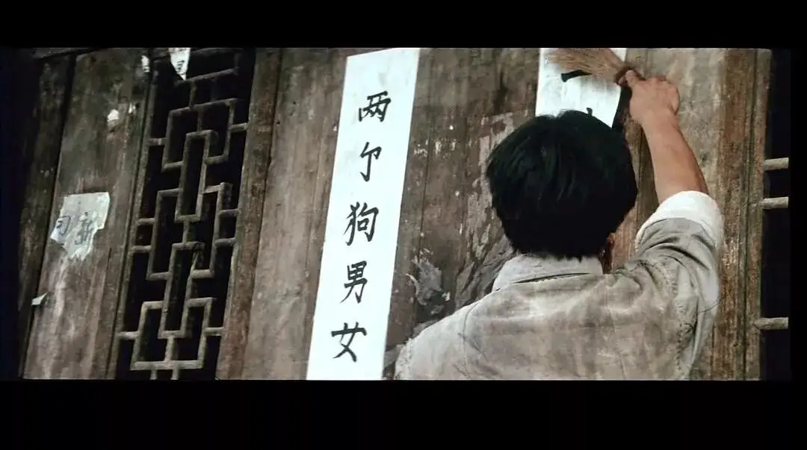
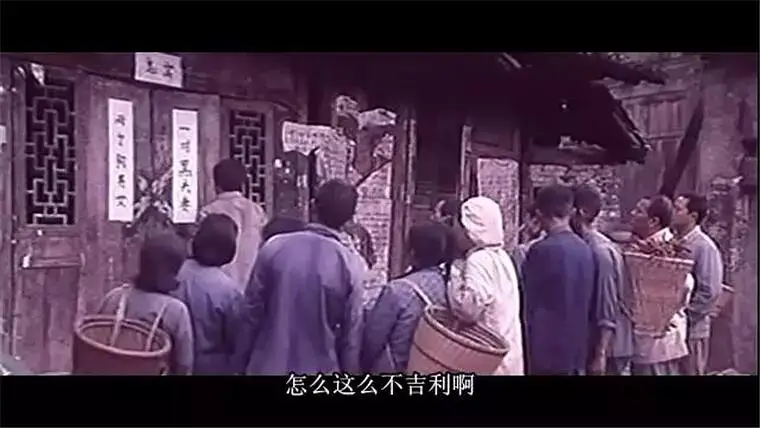
这招来了群众的指三道四，胡玉音不禁为此流泪伤心。
可秦书田却很高兴，他告诉胡玉音，“不管是黑夫妻还是白夫妻，这样至少已经承认我们是夫妻了”。
这场爱情，真的是卑微到轰轰烈烈，魔幻到让人喜极而泣。
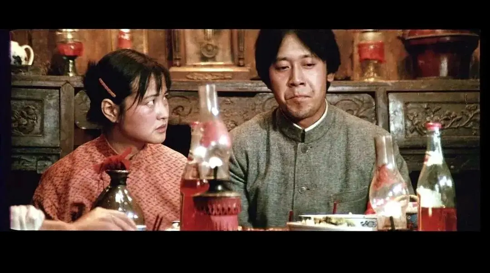
-03- 像畜生一样活下去
当李国香知道秦书田和胡玉音的事情后。
她心中妒忌的火焰开始猛烈燃烧。
黑五类凭什么还可以拥有爱情？！！
他们不配！
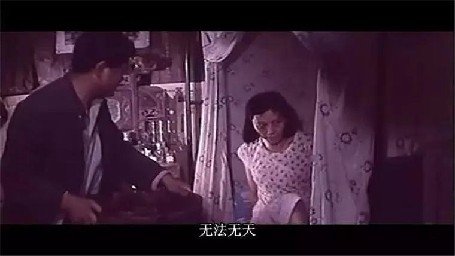
接着，她立马召集人马将秦书田和胡玉音抓捕。
立即就要对他们进行审判，恨不得立刻将他们分开。
那一天，雨下的很大，胡玉音挺着大肚子在雨中淋着，旁边是恐慌的秦书田。
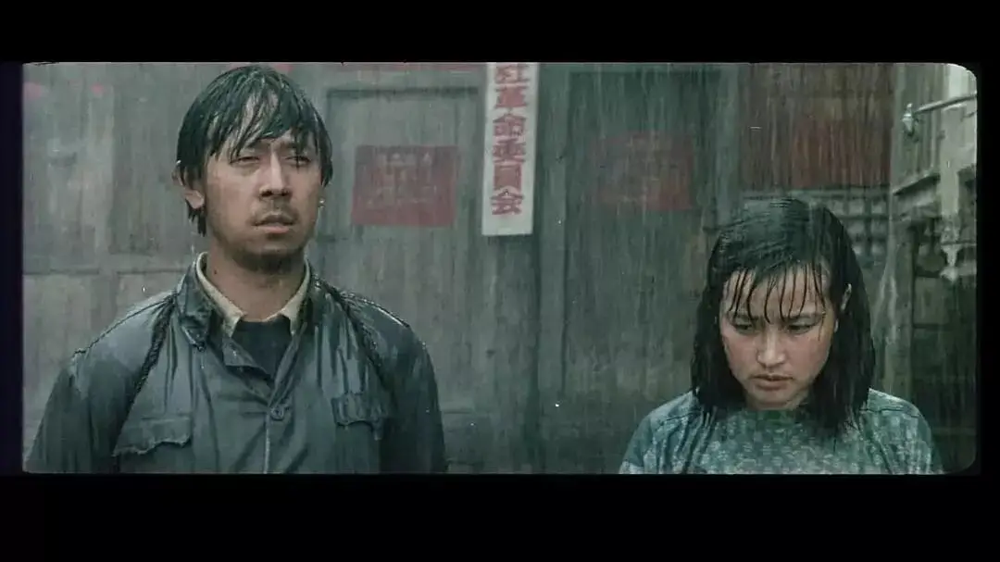
接着伴随着电闪雷鸣，无情的宣判来到：
秦书田被判有期徒刑十年，胡玉音被判三年。
围观的群众，看着此情此景。
有人绝望着，有人哭泣着，有人愤怒着，更多人低头沉默着。
秦书田知道一分开就是十年。
十年啊，到底还会发生怎样可怕的事谁也不知道。
秦书田用坚毅的眼神望着胡玉音，告诉自己的妻子“活下去，像牲口一样活下去！”
胡玉音用复杂的眼神回应了丈夫，有恐惧也有勇敢，有绝望更有期望。
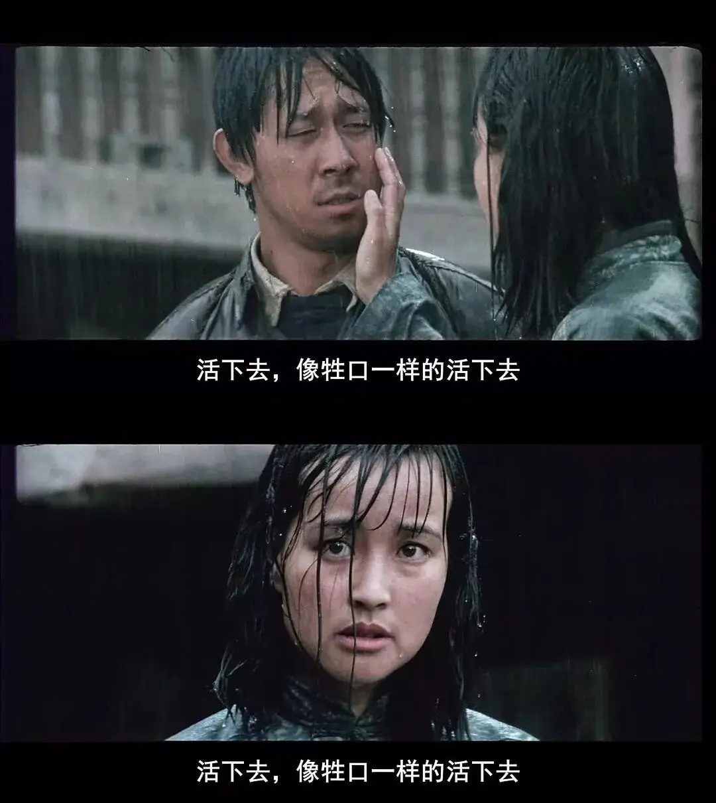
从今以后，为了将来重逢的那一刻，他们将正式放弃作为人应该拥有的一切尊严和权力。
他们将化身畜生，只为活着见到对方。
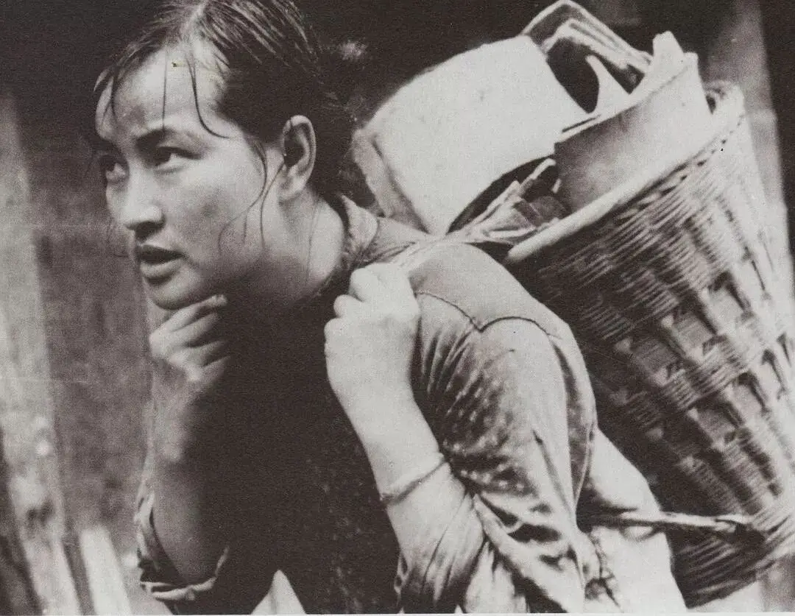
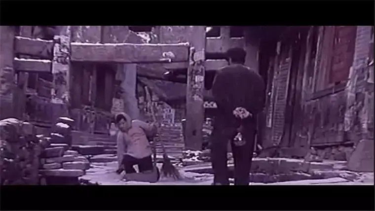
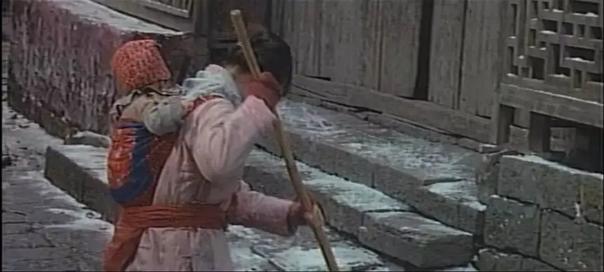
1979年，十年以后。
胡玉音被平反，一个领导以一种做了好人的姿态告诉她：你的房子和当初的1500元现在都还给你。
胡玉音悲愤地说：还我的房子，还我的钱，那你还我的男人啊！
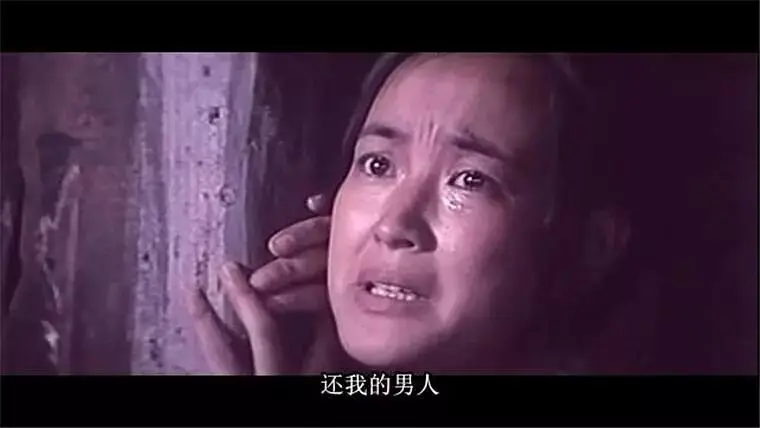
迟到的正义已经没有能力抚平受害者心灵的伤口，反而更像是一种嘲笑，充满了马后炮似的无耻。
秦书田，也终于像畜生一样活了下来。
在回来的船上，秦书田头发花白，碰到了李国香。
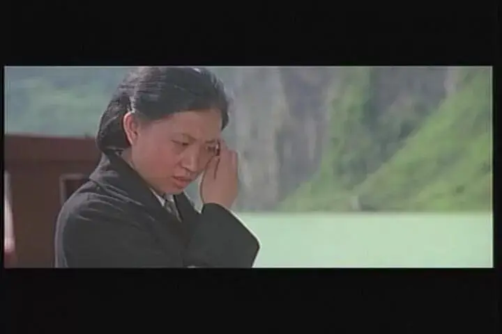
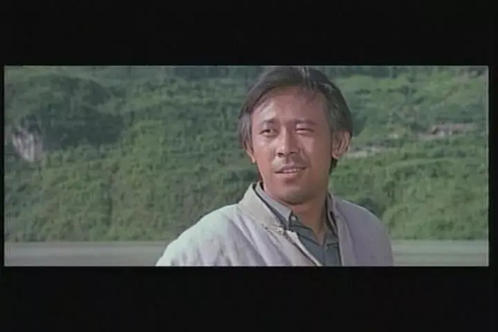
这部电影拍的相当写实，甚至写实的有点可怕。
李国香并没有因为过去而被审判，甚至，她依旧步步高升。
她见到秦书田，第一眼还没有认出来，毕竟她整过的人太多了。
秦书田反而很大度地上来搭话。
离别时，李国香还故作姿态地说“一切都过去了，也许我能帮你什么忙”。
秦书田笑着说：我看你还没成家吧，先安安静静地成个家，学着过个老百姓的日子，别总想着跟他们过不去，他们的日子也容易，也不容易啊！
最后，李国香灰溜溜地上车走了。
这一幕让人五味杂陈。
该受审判的并没有被审判，不该承受代价的人却付出了极大的代价。
某种程度上，无辜人的血确实白流了，他们的肉被人白吃了，他们的生命被人白白地践踏了。
若没有在永恒中伸冤的主，这样的世界真的不值得来。
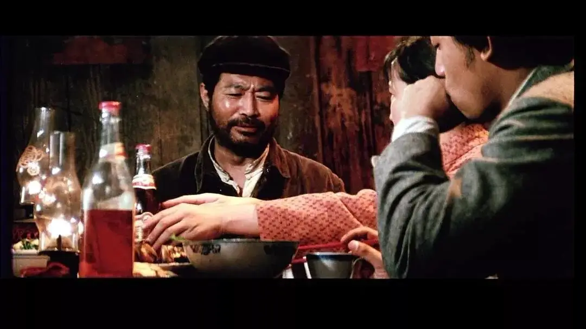
这部作品不仅深刻地刻画了那个时代的可怕，更通过刻画秦书田们向我们传达了牲畜般生猛的希望。
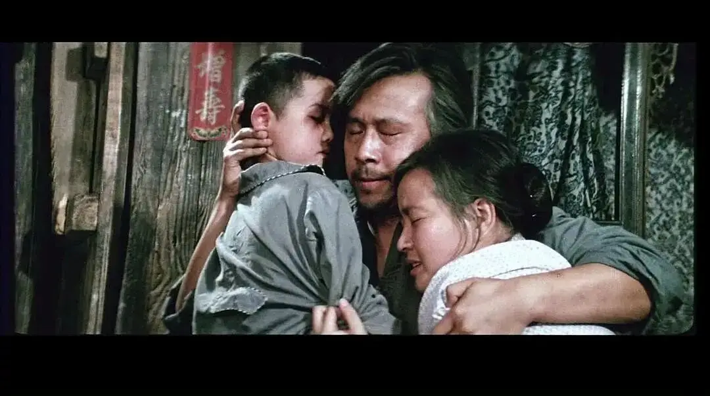
只要人心不死，只要还有人保持着一丝人性，只要有人敢愤怒，敢说真话，敢去追逐鲜花和爱情。
那，就有继续活下去的希望。
因为，一个疯癫的社会，我们能从一个正常的人身上窥见上帝造人起初的美好。
他们有道德律，会因为撒谎而脸红。
他们有正义感，会为黑暗而忧愤。
他们有正常的情感，会赞美鲜花和爱情，会因为婴孩的笑容而感动流泪。
所以，对于我们，真正的正能量其实很简单，但也没那么简单。
那就是回归常识，做个正常人。
丢弃不切实际的幻想和口号，去肯定普世价值。
识破人间天堂的骗局，对人性保持足够的警惕和希望！
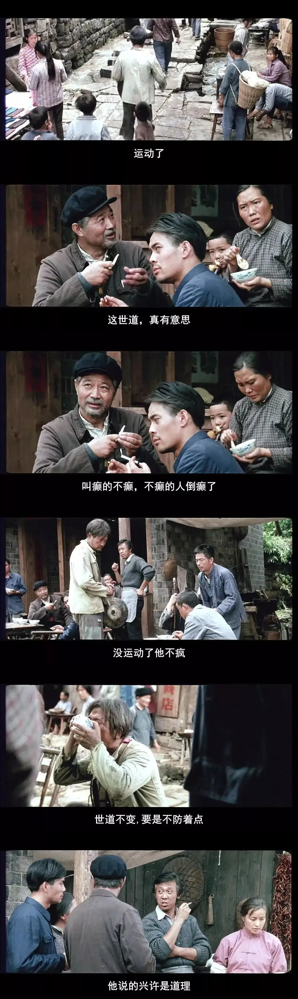
这里没有挑逗你眼目情欲的小鲜肉
也没有挑动你肉体情欲的段子
更没有膨胀你今生骄傲的鸡血
我们只在乎那些最质朴真诚的作品
在那里我们才能恢复真正的想象力
我们也坚信这才是我们真正需要的

ID:Six_hundred_hits
长按二维码，一键关注
【六百击】
电影评论
尽情分享朋友圈

微信二维码打赏通道